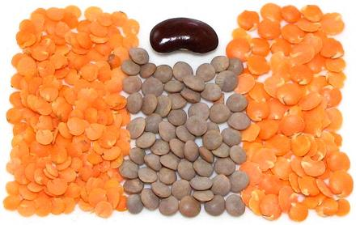

Masoor & Red Lentils

[Egyptian Lentils; Lens culinaris]
The Dal (split and peeled) form of Masoor is highly valued in fuel
short India, for its short cooking time and flavor. It is often cooked
with rice, as the cooking time is similar. The Red Lentil is very
similar, but more characteristic of North America.
The photo shows Masoor Dal to the left, about 0.17 inch (4.3 mm)
diameter, with whole Msoor in the center, about 0.22 inch (5.6 mm).
To the right are North American type Red Lentil Dal, about 0.24 inch
(6.1 mm) diameter, however, some imported Red Lentils are as small as
the Masoor Dal.
The peeled and split versions of these lentils are sometimes called
"Egyptian Lentils" which an inexact term, usually meaning Red Lentils,
but is also sometimes applied Masoor, and even Brown Lentils.
More on Varieties of Bean,
Peas and Lentils.
Buying:
Whole Masoor and Masoor Dal are easily
available in markets serving an Indian community, and Red Lentils are
widely available in North American supermarkets.
Storing:
Keep lentils or dal cool and dry in a sealed
container. Mark the container by date purchased, because age affects
cooking properties. Technically they'll last for years without spoiling
- BUT in practice they should be used within a year, as vitamin content
declines and cooking time may increase, though I have found 2 year old
Masoor Dal still cooked well.
Soaking:
Whole Masoor can be cooked without soaking,
but will cook more quickly if soaked for 4 hours or more. Soaked, it
will also be more tender and fewer will break open. For unsoaked
it will take about 35 minutes. For 1 cup use 2-1/2 cups water and
1/2 teaspoon of salt. Yes salt - see our page on
Soaking / Brining Dried Beans.
Cooking:
Whole Masoor Unsoaked:
Whole soaked lentils will cook
in about 40 minutes, 1 cup to 2-1/2 cups water. They'll still be a bit
crunchy, but won't get any more tender with an hour's cooking. In fuel
short India, whole lentils are most often given a short soak (20
minutes) and cooked for a much shorter time (2 whistles) in a pressure
cooker, but pressure cookers are no longer common in North American
households.Whole Masoor Soaked:
Soak for about 4 hours, 1 cup
to 2-1/2 cups water and a half teaspoon of salt. For cooking they
just need water to cover well, as they won't absorb a lot more. In
15 minutes they will be more tender than the unsoaked at 45 minutes,
and more intact with fewer burst.Masoor Dal:
The Dal is almost never soaked. Cooking
time is about 15 minutes. It is usually cooked with other recipe
ingredients, or cooked mixed with rice.
bp_masooz 160915 - www.clovegarden.com
©Andrew Grygus - agryg@clovegarden.com - Photos on
this page are © cg1 - Linking to and
non-commercial use of this page permitted